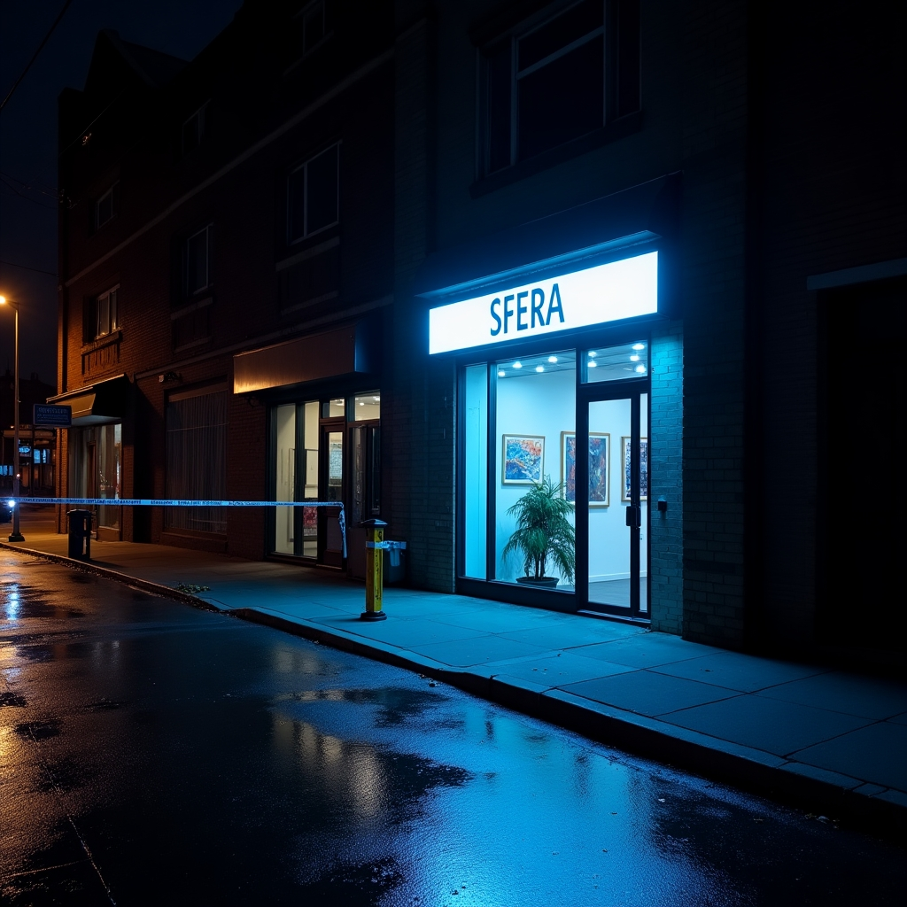
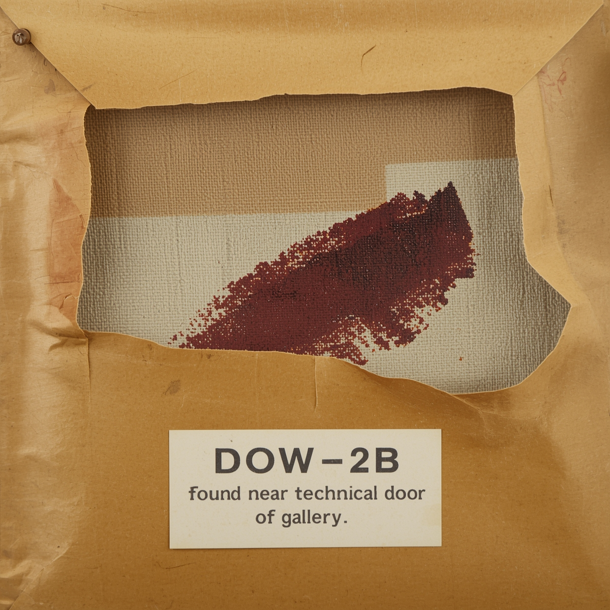

Dane punktu
Lokalizacja:
ul. Dietla 103
Czas oględzin:
15.05.2025, godz. 11:30
Funkcjonariusz prowadzący:
mł. insp. K. Dębski
Osoba przesłuchana
Marek Domański – właściciel galerii.
Potwierdza, że Leon przyjechał o godz. 20:45 w dniu 14.05.
Kłócili się o ubezpieczenie obrazu „Cisza po burzy”.
Leon miał być w złym stanie emocjonalnym.
O 21:00 wyszedł, a Marek „został poprawić oświetlenie”.
Monitoring z tej nocy – brak zapisu (usterka systemu).
Materiały / dowody zabezpieczone
• Karta dostępu do galerii (z odciskiem palca Borkowskiego).
• Fragment płótna z obrazu znaleziony przy drzwiach technicznych.
• Kabel USB – przypuszczalnie od systemu monitoringu (brak danych).
Załączniki
Zdjęcie wejścia do galerii:

Fragment płótna w kopercie dowodowej:

Wydruk dziennika elektronicznego z systemu (brak wpisów między 20:30 a 21:45):